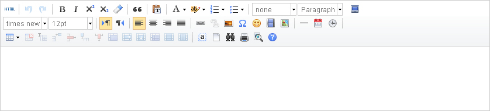

文化大数据库管理系统
您好，
Adimin
所在地区：太原市-迎泽区
[退出]
我的待办
文化艺术资源采集
x
二级分类：
戏剧
音乐
舞蹈
美术
曲艺
杂技
书法
三级分类：
戏曲
话剧
舞剧
歌剧
儿童剧
音乐剧
剧团：
山西晋剧团
山西省实验晋剧院
所获奖项：
一度梅
二度梅
梅花大奖
杏花奖
二度杏花
表演艺术家：
郭彩萍
田桂兰
栗桂莲
宋转转
谢涛
武凌云
胡嫦娥
苗杰
剧种：
晋剧
蒲剧
北路梆子
上党梆子
标题：
检测重复
还可输入80个字符
关键字：
多个关键字之间用空格或"，"隔开
来源：
请选择
文化部
摘要：
内容：

资源格式：
图片
视频
音频
文本
资源扩展名：
png
jpg
mp4
avi
rmvb
mp3
text
附件：
浏览
提交资源